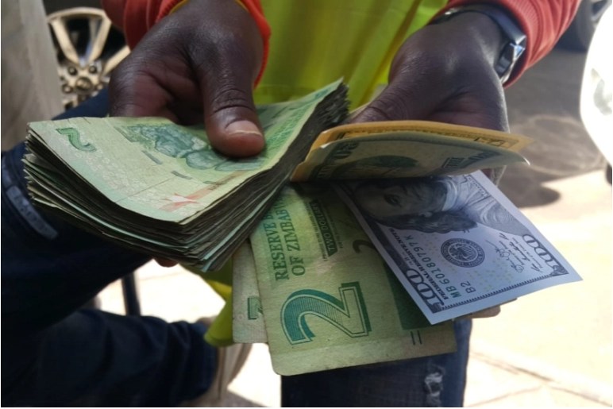

Harare, Zimbabwe – Tafadzwa Chakwara sits on a wooden crate, his elbow resting comfortably on a neat stack of packed onions atop his market stall. “Life is just tough now,” the 27-year-old says, taking a puff from his cigarette. “It doesn’t matter whether one has a formal job or an informal one.” In a country where unemployment has reached an estimated 90 percent, Chakwara, a university graduate of political science and public administration, has recently had to settle for a job selling onions in Mbare Musika, a fruit and vegetable market just outside Harare, the capital of Zimbabwe. The country is deep in the throes of a severe economic crisis. Its currency, the Zimbabwean dollar, has virtually collapsed and now trades at 1:90 against the US dollar. Prices of goods are rising fast, manufacturing and exports are dwindling and foreign currency is in short supply. With a rapidly devaluing currency and hyperinflation last measured in May at close to 800 percent on an annual basis, most Zimbabweans have haplessly watched their earnings evaporate. Some cannot afford to feed themselves any more.
“Before I got this job, there were nights I went without food,” says Chakwara. From his odd job at the market, he earns $2-$3 daily, just about enough to keep hunger at bay – a loaf of bread currently costs $1. “The money is not a lot but it’s better than nothing,” adds Chakwara. In 2009, soaring inflation prompted Zimbabwe to ditch its failing sovereign currency in favour of a series of foreign currencies led by the United States dollar. But “dollarising” the economy hit a major bump in 2015 when greenbacks started vanishing from the formal banking system. In a bid to end the US dollar shortage, Zimbabwe’s central bank in 2016 introduced bond notes – a form of surrogate currency – that was backed by a $200m bond facility from the Africa Export-Import Bank. But black market speculation quickly eroded the bond note’s value, triggering a shortage that the central bank tried to offset by creating electronic notes. In February 2019, bond notes – both physical and electronic – were merged into the Real Time Gross Settlement (RTGS) dollar, also known as the Zimdollar. In June last year, the government banned transacting in all foreign currencies and eventually introduced a new Zimbabwean dollar in November.
Meanwhile, a strict lockdown imposed to stem the spread of the coronavirus pandemic has also affected Zimbabweans who earn a living from informal activities such as vending, hawking and illegal foreign exchange deals. With their movement restricted, many of them have been left without a source of income. “The crisis has reached tipping point, for sure,” said economist Victor Bhoroma, citing the “high levels of inflation, serious wage compression for labour, income and exchange rate losses for businesses, persistent fuel shortages, corruption and high levels of starvation”. Professionals have also been hit by the economic meltdown. The highest-paid teacher in February earned a salary of 4,600 Zimbabwean dollars ($51) at the black market rate of $1:90 Zimbabwean dollars. Last month, the salaries of government workers were raised by 50 percent, but soaring inflation means the increase will make little difference. And with the local currency losing purchasing power as the US dollar continues to appreciate against it, civil servants have been demanding US dollar-denominated salaries. On Monday, nurses began a new round of industrial action. “The [Zimbabwean] $3,000 [$33.3] average salary we earn is not sufficient to cover basic needs without even adding the costs required to attend work,” the Zimbabwe Nurses’ Association (ZINA), which represents about 15,000 state nurses, said in a statement.

Amid the worsening economic crisis, public anger against President Emmerson Mnangagwa – who succeeded Zimbabwe’s veteran ruler Robert Mugabe in a military coup in November 2017 before winning disputed elections – is rising. “There is no solution here nor there from the cabal running affairs of the country,” said Stephen Chuma, a spokesman for the youth wing of MDC Alliance, Zimbabwe’s main opposition party. “Emmerson Mnangagwa’s command economics and policy inconsistencies is not yielding results.” Decrying what he described as “rampant” high-level corruption, Chuma said the government has resorted to “political arrests” as it battles the worsening economic crisis. Critics accuse the government of clamping down on dissent, pointing to the recent arrests of several opposition activists and civil society figures on charges including undermining the president’s authority. Calls and messages to government spokesman Nick Mangwana went unanswered by the time of publication.
Meanwhile, some social media users have called for Zimbabweans to take to the streets to protest against what they view as government misrule and corruption and call for Mnangagwa’s resignation. Political analyst Farai Marapira said the president might not survive the crisis. “By the day, the cards are stacked against him deeper and deeper,” he argued, suggesting that “a concerted action is at play to dissociate him from the good grace of the citizenry. This has the makings of an end game.” But Marapira doubted a popular revolt would succeed, citing the support enjoyed by the governing ZANU-PF party in rural areas. “The popularity of a revolt is difficult to measure because we have two main paradigms to society. The urban and the rural. A truly popular uprising occurs in both spheres. That being said, we are not ready for that,” Marapira said. Last month, Health Minister Obadiah Moyo was arrested on corruption charges in relation to a $60m deal to procure COVID-19 tests and equipment. He has since been released on bail.
Marapira said although the government has made attempts to curtail and punish corruption, more is needed to be done. Bhoroma, the economist, said bold reforms are required to extricate Zimbabwe out of the crisis. “Zimbabwe’s problems lie in the culture of governance in government, the spirit of cronyism in our leadership, policy inconsistency and decaying institutions. “So, in a way, it’s the system and structure of governance that needs to change not the faces in leadership that come from the ruling party in government. Zimbabwe critically needs reforms more than anything at the present moment.” Back in Mbare Musika, Eriko Muchenje rests behind a two-heel metal pushcart he uses to carry goods for a fee. With limited options and a young pregnant wife, the 23-year-old says he has no option but to accept payment in Zimbabwean dollars for his services. “People are rejecting the Zimbabwean dollar yet most of my customers refuse to pay in US dollars,” he says. “But when you buy using the local currency, the prices charged for goods at the shops are exorbitant. In US dollars, the prices are fair,” he adds.
“It’s just hard to survive now in this country.”